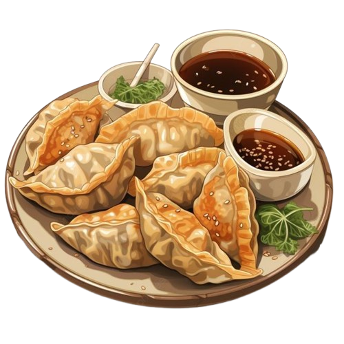
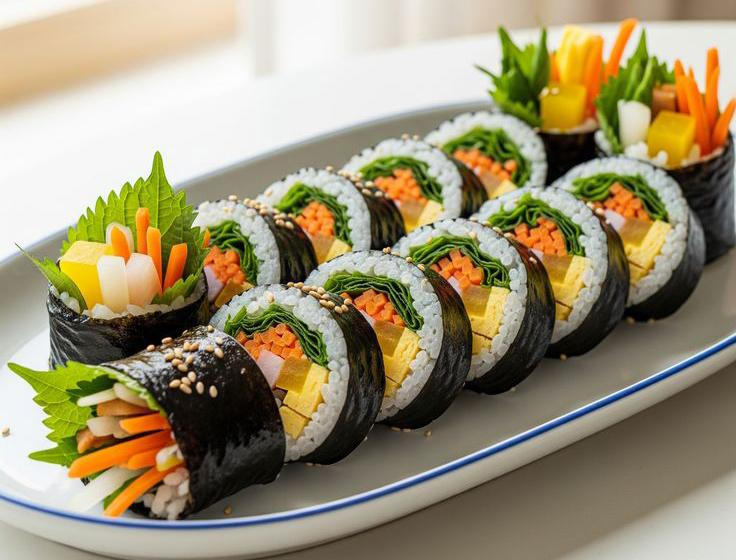
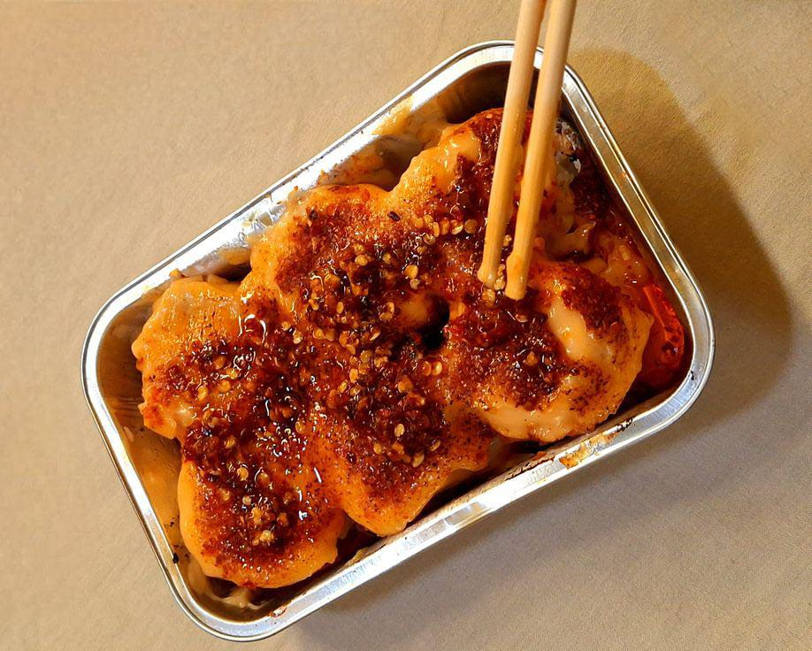
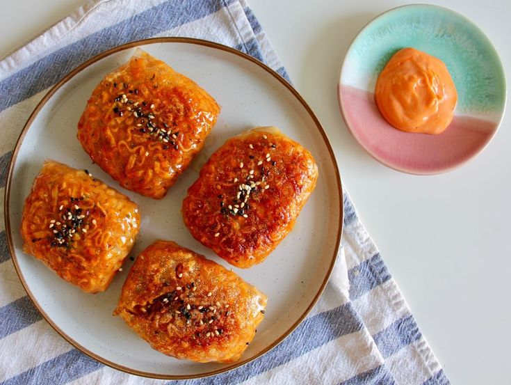
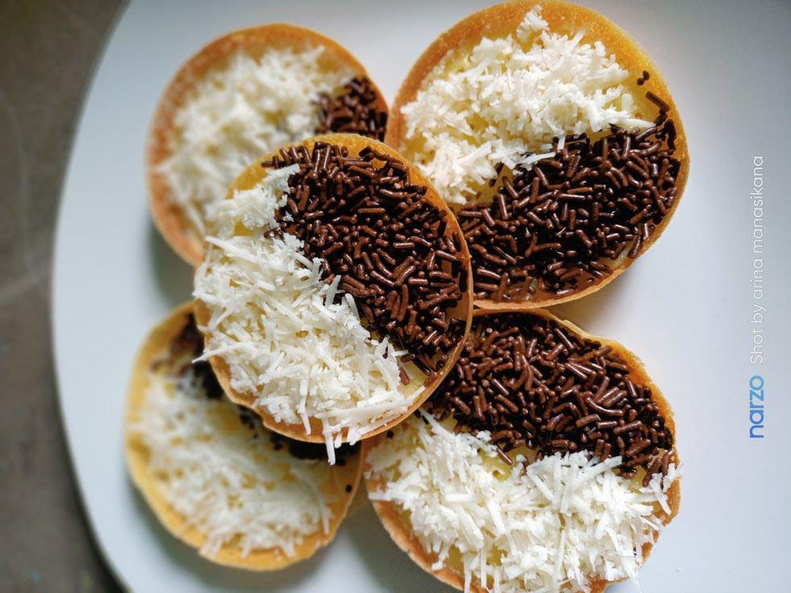
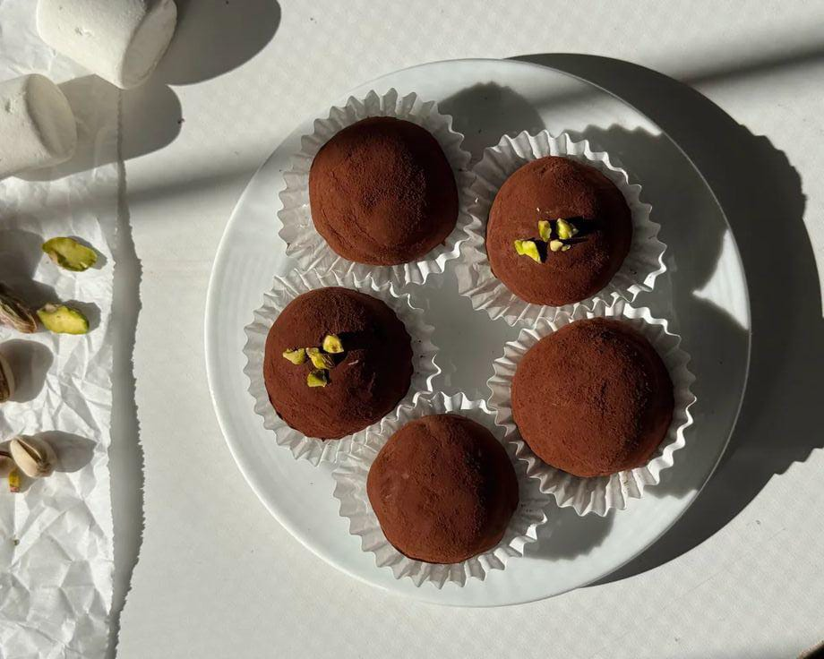
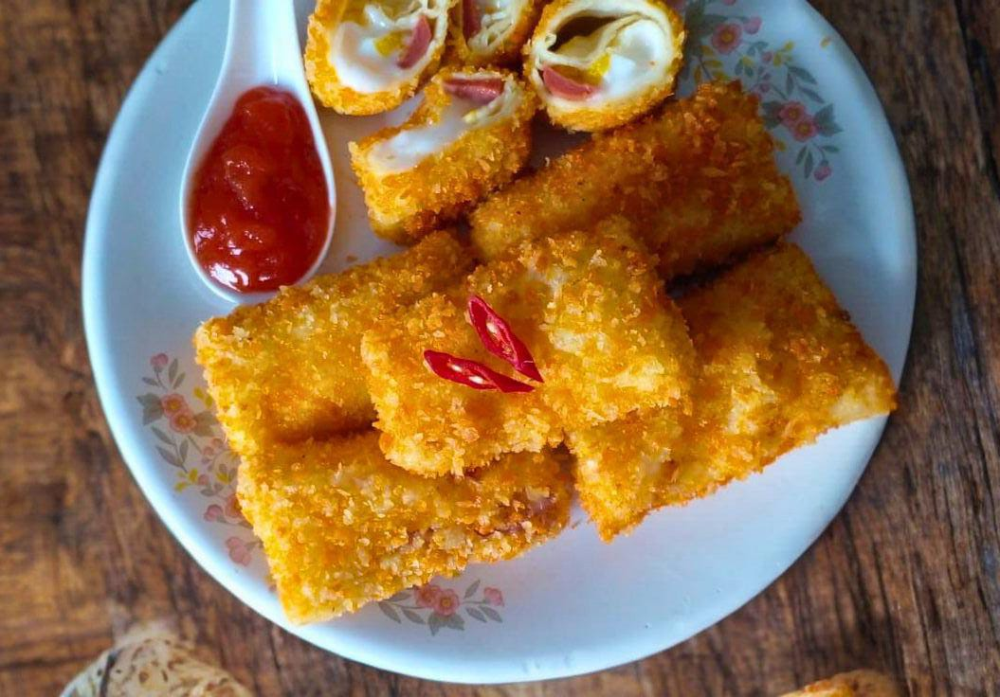

Explore Our Recipes


Dimsum Mentai chili oil
Siomay ayam/udang lembut yang disiram saus mentai creamy pedas gurih dan chili oil, lalu di-torch untuk aroma smokey
Lihat resep

Martabak Mini
camilan tepung manis dengan ukuran mini dan taburan topping yang bervariasi diatasnya
Lihat resep
Dubai Chewy Cookie
Kudapan viral yang menggabungkan cita rasa coklat Dubai yang mewah dengan tekstur kenyal yang unik.
Lihat resep
Risol Mayo
Gulungan lonjong berlapis tepung panir yang teksturnya renyah diluar dan lumer didalam.
Lihat resepContact Us
Get In Touch
Punya pertanyaan atau mau berbagi hasil masakanmu? Hubungi kami disini yaaa!
Bogor, Jawa Barat, Indonesia
sitejnrecipes@gmail.com
+62 812 3456 7890